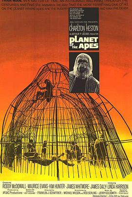
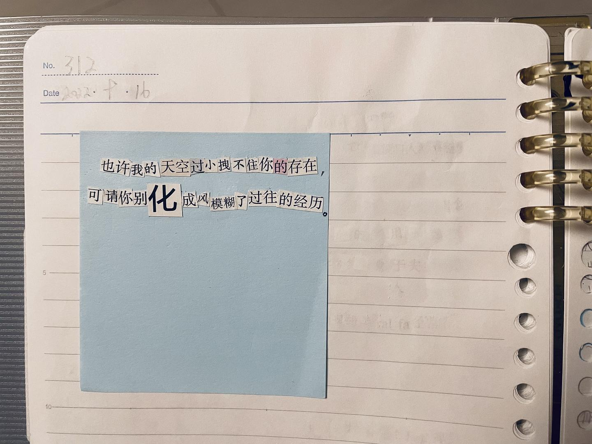
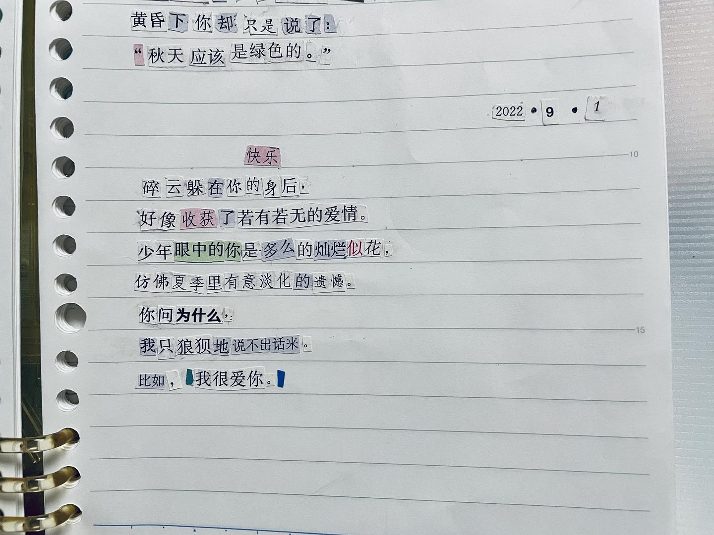
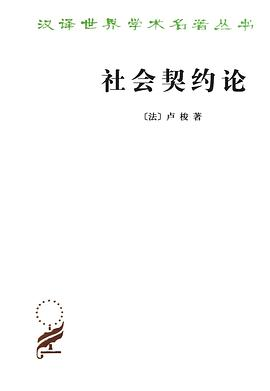
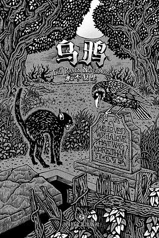

2022-10-30 16:22:04
豆瓣原页
 看过 迷失东京 / Lost in Translation ★★★★★
看过 迷失东京 / Lost in Translation ★★★★★
就像一阵风一样。
2022-10-30 14:35:08
豆瓣原页
 看过 西线无战事 / Im Westen nichts Neues ★★★★★
看过 西线无战事 / Im Westen nichts Neues ★★★★★
音乐很带感，战争的画面也很强。
2022-10-28 12:43:25
豆瓣原页
 想看 爱尔兰人 / The Irishman
想看 爱尔兰人 / The Irishman
2022-10-23 15:35:17
豆瓣原页
 看过 火花 ★★★★★
看过 火花 ★★★★★
先观望，可第一集开头的长镜头就惊艳到我了！（为什么要有结束呢？很舒服的疯狂。）
2022-10-23 00:11:07
豆瓣原页
 看过 大象席地而坐 ★★★★★
看过 大象席地而坐 ★★★★★
光是揭露问题就已经很棒了，有一点个人的风格了。可惜啊。
2022-10-20 22:33:36
豆瓣原页
 在读 四叠半神话大系 ★★★★★
在读 四叠半神话大系 ★★★★★
有趣，同时觉得汤浅又改编得确实好。
2022-10-19 12:23:52
豆瓣原页
 读过 且听风吟 ★★★★☆
读过 且听风吟 ★★★★☆
先看看。（意义不明。）
2022-10-19 06:11:31
豆瓣原页
 想读 尤利西斯
想读 尤利西斯
2022-10-15 22:09:49
豆瓣原页
 看过 岁月神偷 / 歲月神偷 ★★★★★
看过 岁月神偷 / 歲月神偷 ★★★★★
导演的构图很厉害，故事很感人。
2022-10-13 23:01:50
豆瓣原页
在读 且听风吟 ★★★★☆
先看看。
2022-10-13 23:01:18
豆瓣原页
 读过 受戒 ★★★★★
读过 受戒 ★★★★★
读的只是《受戒》。可真的好厉害。
2022-10-13 22:40:50
豆瓣原页
 在读 许三观卖血记 ★★★★★
在读 许三观卖血记 ★★★★★
开头就好可怕。
2022-10-12 12:49:36
豆瓣原页
在看 电锯人 ★★★★★
非常好，我的料。
2022-10-11 23:58:53
豆瓣原页
在读 受戒 ★★★★★
读的只是《受戒》。
2022-10-09 21:39:06
豆瓣原页
 看过 午夜巴黎 / Midnight in Paris ★★★★★
看过 午夜巴黎 / Midnight in Paris ★★★★★
我靠太有趣了。
2022-10-09 20:02:14
豆瓣原页
 读过 奔跑吧！梅洛斯：新解 ★★★★★
读过 奔跑吧！梅洛斯：新解 ★★★★★
又像重新说了一遍。
2022-10-09 06:07:02
豆瓣原页
 想读 沉默
想读 沉默
2022-10-08 22:33:34
豆瓣原页
 想读 夢蝶草
想读 夢蝶草
2022-10-05 18:09:57
豆瓣原页
在读 奔跑吧！梅洛斯：新解 ★★★★★
又像重新说了一遍。
2022-10-05 17:10:53
豆瓣原页
说： 胶片相机里的失焦
运动会，和朋友。

2022-10-02 15:35:53
豆瓣原页
 看过 赛博朋克：边缘行者 第一季 / Cyberpunk: Edgerunners Season 1 ★★★★★
看过 赛博朋克：边缘行者 第一季 / Cyberpunk: Edgerunners Season 1 ★★★★★
我的扳机，永远的神。
2022-10-02 15:08:11
豆瓣原页
在看 赛博朋克：边缘行者 第一季 / Cyberpunk: Edgerunners Season 1 ★★★★★
我的扳机，永远的神。
2022-09-30 22:54:50
豆瓣原页
读过 1Q84 BOOK3 ★★★★☆
文字性还是有的。（没意思。）
2022-09-30 21:47:02
豆瓣原页

看过 人猿星球 / Planet of the Apes ★★★★☆
我看过，印象很深。
2022-09-30 21:32:18
豆瓣原页
 看过 这个杀手不太冷 / Léon ★★★★★
看过 这个杀手不太冷 / Léon ★★★★★
很棒，是我想起了我的婷婷。
2022-09-29 13:17:10
豆瓣原页
 想读 小径分岔的花园
想读 小径分岔的花园
2022-09-25 14:31:28
豆瓣原页
 看过 莉可丽丝 / リコリス・リコイル ★★★★★
看过 莉可丽丝 / リコリス・リコイル ★★★★★
好喜欢好喜欢！（还能接受，确信）
2022-09-24 21:37:08
豆瓣原页
 看过 她 / Her ★★★★★
看过 她 / Her ★★★★★
我靠这里的美术指导你太厉害啦。故事很棒，最后返璞归真。
2022-09-20 22:37:37
豆瓣原页
 想读 小王子
想读 小王子
我也想要一只绵羊。
2022-09-17 22:17:59
豆瓣原页
看过 时空恋旅人 / About Time ★★★★★
里面对时间的思考很深刻，尤其是对父亲的最后一次来说，很棒了。
2022-09-16 22:34:28
豆瓣原页
说： 分享你的拼贴诗
明天的道歉。

2022-09-15 01:37:15
豆瓣原页
看过 1917 ★★★★★
哇靠。
2022-09-13 22:40:52
豆瓣原页
想看 对不起，我们错过了你 / Sorry We Missed You
2022-09-13 06:05:05
豆瓣原页
在读 1Q84 BOOK3 ★★★★☆
文字性还是有的。
2022-09-09 22:46:25
豆瓣原页
 看过 隐入尘烟 ★★★★★
看过 隐入尘烟 ★★★★★
选取的视角很独特，同时艺术指导很喜欢。
2022-09-09 20:35:52
豆瓣原页
 想读 这些人，那些事
想读 这些人，那些事
2022-09-03 12:22:26
豆瓣原页
想读 克莱因壶
2022-09-03 12:22:10
豆瓣原页
 想读 桶川跟踪狂杀人事件
想读 桶川跟踪狂杀人事件
2022-09-02 12:07:26
豆瓣原页
说： 分享你的拼贴诗
昨天的。

2022-08-30 21:58:05
豆瓣原页
 想看 雾中风景 / Τοπίο στην ομίχλη
想看 雾中风景 / Τοπίο στην ομίχλη
2022-08-30 18:11:55
豆瓣原页
 看过 人生大事 ★★★★☆
看过 人生大事 ★★★★☆
很好很好，小孩演的不错。剧情不由分说，就不评价剧情了。
2022-08-30 11:10:07
豆瓣原页
 想读 百年孤独
想读 百年孤独
先读。（尝试失败。）
2022-08-29 18:56:04
豆瓣原页
 看过 天堂电影院 / Nuovo Cinema Paradiso ★★★★★
看过 天堂电影院 / Nuovo Cinema Paradiso ★★★★★
最后的交还突然地有些感动。
2022-08-25 20:26:17
豆瓣原页
在看 火花 ★★★★★
先观望，可第一集开头的长镜头就惊艳到我了！
2022-08-25 15:16:21
豆瓣原页
 看过 别对映像研出手！ / 映像研には手を出すな！ ★★★★★
看过 别对映像研出手！ / 映像研には手を出すな！ ★★★★★
想象力的王国。
2022-08-24 15:11:35
豆瓣原页
 看过 雨人 / Rain Man ★★★★★
看过 雨人 / Rain Man ★★★★★
也许挺好。
2022-08-22 23:42:47
豆瓣原页
读过 1Q84 BOOK 2 ★★★★★
越来越有趣了。
2022-08-22 22:36:19
豆瓣原页

想读 社会契约论
2022-08-21 14:38:21
豆瓣原页
 看过 奇蛋物语 特别篇 / ワンダーエッグ・プライオリティ 特別編 ★★★★☆
看过 奇蛋物语 特别篇 / ワンダーエッグ・プライオリティ 特別編 ★★★★☆
我靠我没看懂。
2022-08-21 14:37:41
豆瓣原页
 想看 彻夜之歌 / よふかしのうた
想看 彻夜之歌 / よふかしのうた
2022-08-19 15:58:41
豆瓣原页
在读 1Q84 BOOK 2 ★★★★★
越来越有趣了。
2022-08-17 17:24:15
豆瓣原页
 看过 拯救大兵瑞恩 / Saving Private Ryan ★★★★★
看过 拯救大兵瑞恩 / Saving Private Ryan ★★★★★
好厉害。
2022-08-16 15:13:52
豆瓣原页
 看过 穆赫兰道 / Mulholland Dr. ★★★★☆
看过 穆赫兰道 / Mulholland Dr. ★★★★☆
没看懂。
2022-08-16 10:54:33
豆瓣原页
读过 鬼物語 ★★★★★
我的894！
2022-08-16 10:36:10
豆瓣原页
 在看 伪物语 / 偽物語 ★★★★★
在看 伪物语 / 偽物語 ★★★★★
依旧在线。
2022-08-15 22:17:56
豆瓣原页
 在玩 Phigros ★★★★★
在玩 Phigros ★★★★★
好好玩。
2022-08-15 22:17:13
豆瓣原页
 听过 之乎者也 ★★★★★
听过 之乎者也 ★★★★★
牛哇。
2022-08-15 21:47:33
豆瓣原页
 看过 赎罪 / Atonement ★★★★★
看过 赎罪 / Atonement ★★★★★
那个战争的长镜头真是太惊艳了！而且，是不是用了很多柔焦的镜头？
2022-08-15 18:09:36
豆瓣原页
 听过 浴室 ★★★★★
听过 浴室 ★★★★★
不作评价。
2022-08-15 18:09:14
豆瓣原页
 听过 Today Is A Beautiful Day ★★★★★
听过 Today Is A Beautiful Day ★★★★★
LOVE&ROLL好像一只小恶魔哦。
2022-08-15 18:08:42
豆瓣原页
想听 Today Is A Beautiful Day
2022-08-15 18:04:16
豆瓣原页
读过 言叶之庭 ★★★★☆
补标。
2022-08-15 18:02:31
豆瓣原页
在读 言叶之庭 ★★★★★
我靠。
2022-08-15 14:59:00
豆瓣原页
在读 百年孤独
先读。
2022-08-15 14:35:36
豆瓣原页
想读 局外人
2022-08-15 14:28:39
豆瓣原页
 读过 1Q84 BOOK1 ★★★★★
读过 1Q84 BOOK1 ★★★★★
很好的开头。
2022-08-15 12:02:20
豆瓣原页
 看过 遇到百分之百的女孩 / 100％の女の子 ★★★★☆
看过 遇到百分之百的女孩 / 100％の女の子 ★★★★☆
应该是受限于时代。
2022-08-15 11:57:17
豆瓣原页
 看过 就这样，我们把金鱼放入了泳池 / そうして私たちはプールに金魚を、 ★★★★★
看过 就这样，我们把金鱼放入了泳池 / そうして私たちはプールに金魚を、 ★★★★★
奇怪但很喜欢。
2022-08-15 09:54:13
豆瓣原页
 想看 星际牛仔 / カウボーイビバップ
想看 星际牛仔 / カウボーイビバップ
2022-08-15 09:43:54
豆瓣原页
 看过 化物语 / 化物語 ★★★★★
看过 化物语 / 化物語 ★★★★★
接触。（再次发现，新房对文字的理解，很有趣。他用文字来拟物，仿佛是对文字原来的作用的再运用。）
2022-08-14 09:55:21
豆瓣原页
 看过 幻龙记 / D.I.C.E. ★★★★★
看过 幻龙记 / D.I.C.E. ★★★★★
童年的回忆。
2022-08-13 22:08:52
豆瓣原页
 看过 大佛普拉斯 ★★★★★
看过 大佛普拉斯 ★★★★★
很有导演的个人风格，试图在打破第四面墙，拉近与生活的联系。
2022-08-11 20:18:56
豆瓣原页
 在看 非人哉 第二季 ★★★★★
在看 非人哉 第二季 ★★★★★
还是老味道！
2022-08-09 22:17:02
豆瓣原页
 看过 猜火车 / Trainspotting ★★★★☆
看过 猜火车 / Trainspotting ★★★★☆
节奏，和猜不到结局。
2022-08-09 18:54:13
豆瓣原页
 看过 小丑 / Joker ★★★★★
看过 小丑 / Joker ★★★★★
还在摇摆不定，不想多说。
2022-08-09 13:26:26
豆瓣原页
 看过 蓝色大门 / 藍色大門 ★★★★★
看过 蓝色大门 / 藍色大門 ★★★★★
如果是我的夏天，我的夏天也是我的回忆。
2022-08-09 10:10:35
豆瓣原页
 想看 新桥恋人 / Les amants du Pont-Neuf
想看 新桥恋人 / Les amants du Pont-Neuf
2022-08-08 12:12:50
豆瓣原页
 在看 汉化日记 第三季 ★★★★★
在看 汉化日记 第三季 ★★★★★
还是这个味道。
2022-08-07 22:09:28
豆瓣原页
 看过 恐怖分子 / 恐怖份子 ★★★★★
看过 恐怖分子 / 恐怖份子 ★★★★★
那一脚，却踹出了枪声。
2022-08-07 21:35:11
豆瓣原页
 想看 骚动时节的少女们啊 / 荒ぶる季節の乙女どもよ。
想看 骚动时节的少女们啊 / 荒ぶる季節の乙女どもよ。
2022-08-07 17:45:41
豆瓣原页
 想读 云彩收集者手册
想读 云彩收集者手册
2022-08-07 11:04:53
豆瓣原页

想读 乌鸦·永不复生
2022-08-05 22:01:06
豆瓣原页
 看过 好莱坞往事 / Once Upon a Time… in Hollywood ★★★★★
看过 好莱坞往事 / Once Upon a Time… in Hollywood ★★★★★
就是这个结尾！
2022-08-04 22:00:30
豆瓣原页
 看过 闪灵 / The Shining ★★★★★
看过 闪灵 / The Shining ★★★★★
太经典了。
2022-08-04 16:28:14
豆瓣原页
 想读 爱你就像爱生命
想读 爱你就像爱生命
2022-08-04 16:25:58
豆瓣原页
 看过 血色将至 / There Will Be Blood ★★★★★
看过 血色将至 / There Will Be Blood ★★★★★
第一次接受这样的风格。
2022-08-03 17:32:04
豆瓣原页
 想看 你还活着 / Du levande
想看 你还活着 / Du levande
2022-08-02 17:26:42
豆瓣原页
读过 白洋淀纪事 ★★★★☆
喜欢里面的《芦花荡》。
2022-08-01 22:24:57
豆瓣原页
 看过 菊次郎的夏天 / 菊次郎の夏 ★★★★★
看过 菊次郎的夏天 / 菊次郎の夏 ★★★★★
他没问为什么。
2022-08-01 14:37:11
豆瓣原页
 看过 绅士们 / The Gentlemen ★★★★★
看过 绅士们 / The Gentlemen ★★★★★
喜欢。
2022-07-31 07:14:10
豆瓣原页
 读过 妹妹人生 〈下〉 ★★★★★
读过 妹妹人生 〈下〉 ★★★★★
结尾有些潦草。
2022-07-30 16:00:19
豆瓣原页
 想读 万寿寺
想读 万寿寺
2022-07-30 15:56:42
豆瓣原页
 看过 四叠半神话大系 / 四畳半神話大系 ★★★★★
看过 四叠半神话大系 / 四畳半神話大系 ★★★★★
好快的节奏。（我永远喜欢森见！）
2022-07-29 20:46:40
豆瓣原页
在看 四叠半神话大系 / 四畳半神話大系 ★★★★★
好快的节奏。
2022-07-29 20:44:35
豆瓣原页
想读 四叠半神话大系
2022-07-29 20:19:14
豆瓣原页
 在读 欧也妮·葛朗台 ★★★★★
在读 欧也妮·葛朗台 ★★★★★
2022-07-29 17:24:50
豆瓣原页
 看过 火星救援 / The Martian ★★★★★
看过 火星救援 / The Martian ★★★★★
很好的爽歪歪电影。
2022-07-29 12:24:44
豆瓣原页
在读 妹妹人生 〈下〉 ★★★★☆
2022-07-29 12:24:22
豆瓣原页
 读过 妹妹人生 〈上〉 ★★★★★
读过 妹妹人生 〈上〉 ★★★★★
好有感觉。
2022-07-28 21:02:34
豆瓣原页
 看过 辛德勒的名单 / Schindler’s List ★★★★★
看过 辛德勒的名单 / Schindler’s List ★★★★★
他也许是在忏悔。
2022-07-28 16:37:58
豆瓣原页
收藏广播到豆列 殷丹 小米粥 说：
2022-07-28 14:01:52
豆瓣原页
 看过 更衣人偶坠入爱河 / その着せ替え人形は恋をする ★★★★★
看过 更衣人偶坠入爱河 / その着せ替え人形は恋をする ★★★★★
有趣。
2022-07-26 18:09:25
豆瓣原页
 看过 少年派的奇幻漂流 / Life of Pi ★★★★★
看过 少年派的奇幻漂流 / Life of Pi ★★★★★
突然就有了深意，其中有几段是真的很平静。
2022-07-26 15:42:48
豆瓣原页
 看过 疯狂的麦克斯4：狂暴之路 / Mad Max: Fury Road ★★★★★
看过 疯狂的麦克斯4：狂暴之路 / Mad Max: Fury Road ★★★★★
好爽。
2022-07-26 10:21:58
豆瓣原页
 听过 エヴァンゲリオン THE BIRTHDAY OF Rei AYANAMI ★★★★★
听过 エヴァンゲリオン THE BIRTHDAY OF Rei AYANAMI ★★★★★
2022-07-25 21:52:07
豆瓣原页
 看过 无耻混蛋 / Inglourious Basterds ★★★★★
看过 无耻混蛋 / Inglourious Basterds ★★★★★
好好。说不上来的痛快，结尾有些潦草。
2022-07-25 16:29:32
豆瓣原页
 看过 大卫·戈尔的一生 / The Life of David Gale ★★★★★
看过 大卫·戈尔的一生 / The Life of David Gale ★★★★★
也只有死亡能够制止死亡。
2022-07-24 20:24:29
豆瓣原页
 想看 青之炎 / 青の炎
想看 青之炎 / 青の炎
2022-07-24 19:10:51
豆瓣原页
在看 莉可丽丝 / リコリス・リコイル ★★★★★
好喜欢好喜欢！
2022-07-24 18:05:20
豆瓣原页
 看过 变相怪杰 / The Mask ★★★★☆
看过 变相怪杰 / The Mask ★★★★☆
2022-07-23 22:09:09
豆瓣原页
 看过 狮子王 / The Lion King ★★★★★
看过 狮子王 / The Lion King ★★★★★
完成度很高。
2022-07-23 17:05:40
豆瓣原页
 看过 千子 / センコロール ★★★★☆
看过 千子 / センコロール ★★★★☆
有趣的创意。
2022-07-23 16:27:45
豆瓣原页
 看过 绿皮书 / Green Book ★★★★★
看过 绿皮书 / Green Book ★★★★★
不要携带偏见。
2022-07-22 19:39:10
豆瓣原页
想看 赎罪 / Atonement
2022-07-22 17:28:54
豆瓣原页
 看过 头号玩家 / Ready Player One ★★★★★
看过 头号玩家 / Ready Player One ★★★★★
够了。
2022-07-22 15:18:20
豆瓣原页
 看过 茶馆 ★★★★★
看过 茶馆 ★★★★★
戏剧。
2022-07-21 23:46:17
豆瓣原页
 想看 蓝风筝
想看 蓝风筝
2022-07-19 21:58:48
豆瓣原页
在看 化物语 / 化物語 ★★★★★
接触。
2022-07-19 21:56:49
豆瓣原页
 看过 大卫·科波菲尔 / David Copperfield ★★★★☆
看过 大卫·科波菲尔 / David Copperfield ★★★★☆
2022-07-18 22:06:17
豆瓣原页
想读 受戒
2022-07-18 22:03:32
豆瓣原页
在读 乱离中的歌吟：郁达夫自述（百年中国记忆.文学家自述） ★★★★☆
先了解一下作者。
2022-07-18 21:59:48
豆瓣原页
在读 小王子 ★★★★★
我也想要一只绵羊。
2022-07-18 21:57:38
豆瓣原页
 读过 茶，汤和好天气 ★★★★★
读过 茶，汤和好天气 ★★★★★
挺好。
2022-07-18 21:57:19
豆瓣原页
 看过 间谍过家家 第一季 / SPY×FAMILY ★★★★★
看过 间谍过家家 第一季 / SPY×FAMILY ★★★★★
哇，超棒！
2022-07-18 13:03:26
豆瓣原页
看过 莉可丽丝 / リコリス・リコイル ★★★★★
好喜欢好喜欢！
2022-07-18 11:24:46
豆瓣原页
在看 大卫·科波菲尔 / David Copperfield ★★★★☆
2022-07-18 11:22:46
豆瓣原页
想看 大卫·戈尔的一生 / The Life of David Gale
2022-07-15 21:37:00
豆瓣原页
想读 局外人
2022-07-15 16:50:36
豆瓣原页
 看过 飞越疯人院 / One Flew Over the Cuckoo’s Nest ★★★★★
看过 飞越疯人院 / One Flew Over the Cuckoo’s Nest ★★★★★
结尾即高潮。
2022-07-14 17:25:04
豆瓣原页
 看过 蝙蝠侠 / Batman ★★★★☆
看过 蝙蝠侠 / Batman ★★★★☆
好看。
2022-07-14 16:45:51
豆瓣原页
 想看 17.3 关于性 / 17.3 about a sex
想看 17.3 关于性 / 17.3 about a sex
2022-07-14 12:23:48
豆瓣原页
想看 千子 / センコロール
2022-07-12 12:23:24
豆瓣原页
 想读 一间只属于自己的房间
想读 一间只属于自己的房间
2022-07-12 11:35:48
豆瓣原页
 看过 卷土重来 / The Comeback ★★★★☆
看过 卷土重来 / The Comeback ★★★★☆
2022-07-12 11:31:58
豆瓣原页
在听 之乎者也 ★★★★★
2022-07-10 22:41:51
豆瓣原页
 想看 玲音 / Serial Experiments: Lain
想看 玲音 / Serial Experiments: Lain
2022-07-10 12:16:48
豆瓣原页
想看 莉可丽丝 / リコリス・リコイル
2022-07-10 11:36:23
豆瓣原页
在读 茶，汤和好天气 ★★★★★
2022-07-08 21:34:27
豆瓣原页
 看过 假面骑士巫骑 / 仮面ライダーウィザード ★★★★★
看过 假面骑士巫骑 / 仮面ライダーウィザード ★★★★★
魔法与骑士的碰撞。
2022-07-08 21:34:11
豆瓣原页
 看过 假面骑士W / 仮面ライダーW ★★★★★
看过 假面骑士W / 仮面ライダーW ★★★★★
太好看了。
2022-07-08 15:23:46
豆瓣原页
 看过 死亡诗社 / Dead Poets Society ★★★★★
看过 死亡诗社 / Dead Poets Society ★★★★★
人们不是无能为力的，只是他们不懂。
2022-07-07 20:24:16
豆瓣原页
 读过 朝闻道 ★★★★★
读过 朝闻道 ★★★★★
好喜欢《诗云》。
2022-07-07 20:17:07
豆瓣原页
 看过 爱在午夜降临前 / Before Midnight ★★★★★
看过 爱在午夜降临前 / Before Midnight ★★★★★
也许这才是生活。
2022-07-06 12:46:28
豆瓣原页
 想读 我与地坛
想读 我与地坛
2022-07-05 13:19:47
豆瓣原页
 读过 长日将尽 ★★★★★
读过 长日将尽 ★★★★★
说话絮絮叨叨。可是在本恩太太回头问他的时候，我还是差点没忍住。
2022-07-04 11:26:09
豆瓣原页
在读 1Q84 BOOK1 ★★★★★
很好的开头。
2022-07-03 12:40:14
豆瓣原页
 想读 遇到百分之百的女孩
想读 遇到百分之百的女孩
2022-07-01 21:08:01
豆瓣原页
 看过 爱在日落黄昏时 / Before Sunset ★★★★★
看过 爱在日落黄昏时 / Before Sunset ★★★★★
特别的，塞纳河畔与你的相遇。
2022-07-01 19:25:16
豆瓣原页
 看过 红辣椒 / パプリカ ★★★★★
看过 红辣椒 / パプリカ ★★★★★
真的好像一场梦。
2022-07-01 14:09:42
豆瓣原页
 听过 Show Me How ★★★★★
听过 Show Me How ★★★★★
2022-07-01 14:03:03
豆瓣原页
 看过 绿巨人浩克 / Hulk ★★★☆☆
看过 绿巨人浩克 / Hulk ★★★☆☆
2022-07-01 13:58:15
豆瓣原页
 看过 饮食男女 / 飲食男女 ★★★★★
看过 饮食男女 / 飲食男女 ★★★★★
人生百态。